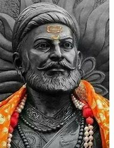

Chhatrapati Shivaji Maharaj was the founder of the Maratha kingdom of India. The security of the kingdom was entirely based on religious tolerance and also on the functional integration of Brahmans, Marathas, and the Prabhus.
Chhatrapati Shivaji Maharaj
Founder of the Maratha Empire

Biography
Chhatrapati Shivaji was one of the bravest, intelligent and fearless Maratha ruler and was the founder of the Maratha Empire who changed the history of the country. In the year 1674 Shivaji Maharaj was crowned and received the title of Chhatrapati or ‘Chief of the Kshatriyas’ for his undaunted ability to protect them all under the safe shelter of his leadership. He is also known as the Father of the Indian Navy, as he was the first to realize the importance of having a naval force, and therefore he strategically established a navy and forts at the coastline to defend the Konkan side of Maharashtra.
Shivaji Maharaj was born on 19 February 1630 in Shivneri Fort in Junnar village in Pune district. His father’s name was Shahaji Bhonsale and his mother’s name was Jijabai Bhosle. Shahji Bhonsale, a captain of mercenaries belonged to a Maratha family. Jijaji Bai has lost several children after Sambhaji’s birth. Shivaji was the second son of Shahji, born in the hill-fort of Shivner, Jija Bai (a daughter of the aristocratic Lukhji Jadav of Sindkhed) had prayed to the local goddess, Shiva-Bai, for the good of her expected child, and named him after that deity.
In 1657 Shivaji started fighting against the Mughals. At that time, the Mughal Empire was in favor of Aurangzeb, Aurangzeb pitted Shaista Khan’s army against Shivaji. He took possession of Poona and expanded the army. One night Shivaji suddenly attacked in Poona, thousands of Mughal army men were killed, but Shaista Khan escaped.
After this, in 1664, Shivaji also hoisted his flag in Surat a wealthy Mughal trading center.
In 1666, Aurangzeb invited Shivaji and his son Sambhaji to the court of the Mughal Empire at Agra. Shivaji got offended by the manner of Aurangzeb as he was given the place behind the Mughals’ military commanders.
Learn more about Shivaji Maharaj“Freedom is a boon,which everyone has the right to receive.”
Some Famous Forts
Shivneri Fort
Rajgad Fort
Sinhgad Fort